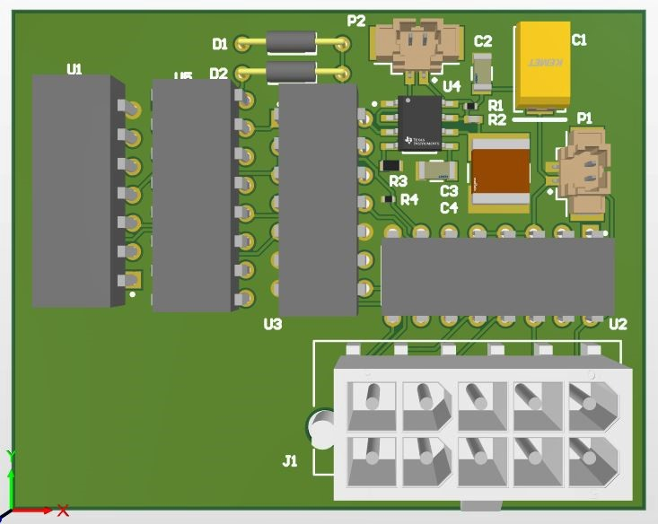
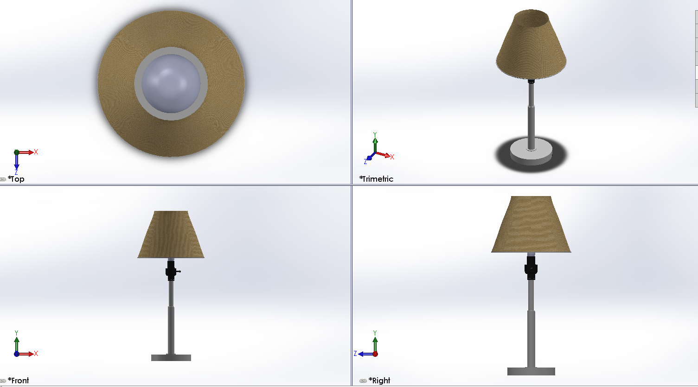

Tanish Shah
Hello there! Welcome to my website where you can find about about some of my technical skills and projects. I hope you enjoy your time here and thank you for visiting my site.
Skills
Here you can check out some of the skills that I have developed over the years.
Electronics
I have learned to prototype circuits using a breadboard as well as soldering components to build working circuits. Additionally, I have used Altium Desginer and Altium365 for working with different circuits, some of which can be found on my google drive. I also have experience using LTSPICE to simulate various circuits.
CAD
I have gained some experience in CAD software including AutoCAD and Solidworks, Using AutoCAD I have created various 2-D drawings; some of which were used to laser cut components. I have also used Solidworks to make 3-D components, assemblies, and even drawings. To see some of the models visit the google drive folder.
Programming
I have experience in various different programming languages including; Python, C++, HTML, CSS, JS, Bash, and MATLAB. I also have experience using various tools such as MongoDB and PostgreSQL. Some of my programming projects are listed below but others can be found on my github page which is linked at the bottom.

Projects
Here you can check out some of the projects that I have worked on. To see the code as well as other projects that I have worked on check out my github page.
KwikEdit
QwikEdit is a program which includes basic image manipulation tools such as rotation, image blending, and so on. It was written in Python and uses OpenCV to perform various operations. The GUI was made using Tkinter.

Nutritrack
Nutritrack is a simple calorie tracking application that was built using MongoDB, Python, and mongoengine. The program includes; user verification, CRUD features for entries, and the ability to create a graph of all entries made by a user.
Markit
Markit is a project which allows a user to plot points using the Leaflet api. It allows for individual inputs as well as file inputs. It was created using HTML5, CSS3, and JavaScript.

About Me
I'm a student studying mechatronics engineering. I'm passionate about various technologies including 3-D printing, robotics, and machine learning. I am also interested in sustainable energy sources, green technologies, and improving accessibility technology. If you have any questions for me or would like to contact me, feel free to send me an email.